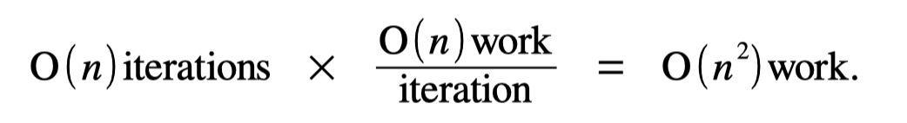
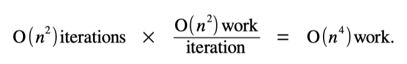

Big-O notation is a powerful tool for predicting how quickly a piece of code will run in a novel scenario. Once you know the big-O runtime of a piece of code, you can extrapolate its runtime, compare its performance against other alternative implementations, etc.
But of course, that presumes you know how to get the big-O runtime of a piece of code. That skill – going from code to a big-O runtime – is a mix of an art and a science, and there are tons of beautiful strategies you can use to do it.
This handout covers the basics of big-O runtime determination and gives several core techniques we recommend you use as you’re getting started
Technique 1: When in Doubt, Work Inside Out!
Many pieces of code consist of several loops nested inside one another. When you see a piece of code like that, it’s often helpful to analyze the runtime by starting with the most-deeply-nested loop and, from there, to work outwards toward the top-level loop.
As an example, consider the following (silly, contrived) function:
void omnesia(int n) {
int total = 0;
for (int i = 0; i < n * n; i++) {
for (int j = 0; j < n; j++) {
for (int k = 0; k < n; k++) {
total++;
}
}
}
return total;
}
Our goal will be to work out the big-O runtime of this function. Since it consists of several nested loops, we’ll begin with the most-deeply-nested loop, which is shown here:
for (int k = 0; k < n; k++) {
total++;
}
How much work does this loop do? Well, it runs for a total of n iterations, and each iteration does a constant amount of work (the work required to add one to total is independent of the values of n, k, etc.) Therefore, this loop does O(n) total work. With that in mind, we can “simplify” our original loop nest by replacing this innermost loop with something to the effect of “do O(n) work.” That’s shown here:
|
|
We’ve now reduced how much code there is here, leaving us with a simpler piece of code to analyze. And hey – if we can keep simplifying things over and over, then through the Vast Power of Recursion we’ll eventually end up with something so easy we can solve it directly!
We’ll therefore repeat the previous process. We’ll take the innermost loop in this code, which now looks like this:
for (int j = 0; j < n; j++) {
/*************************
* Do O(n) work *
* **********************/
}
So – how much work does this loop do? Well, there will be O(n) total iterations of this loop (specifically, it’s going to run n times). Each iteration of the loop does O(n) work, since that’s literally what it says. Putting that together, we get

Therefore, this loop does O(n 2 work. Feeding that back into our original code gives us this:
|
|
Let’s now take the innermost loop of what remains, which is this one here:
for (int i = 0; i < n * n; i++) {
/*************************
* *
* Do O(n^2) work *
* *
* **********************/
}
So, how much work does this do? Well, each loop iteration does O(n^2) work. The number of iterations of this loop is O(n^2) as well, since it runs n^2 times. Overall, this means that the loop does

Simplifying our code once more gives us the following:
|
|
At this point, we’re left with code that declares a single integer variable, does O(n^4) work, then returns an integer. This takes, collectively, O(n^4) time, and so that’s the overall runtime for this piece of code.
Technique 2: Multiply When You Can, Add When You Can’t
In the examples up to this point, we’ve generally used a rule of thumb that goes like this: figure out how much work is done per iteration, then multiply that by the number of iterations, and you have your total work done. That technique is fine in cases where the amount of work done on each loop iteration is the same. However, that technique won’t always work, and when that happens, you’ll need to use other techniques.
For this section, we’ll use this piece of code as an example:
void amniscience(int n) {
for (int i = 0; i < n; i++) {
for (int j = 0; j < i; j++) {
for (int k = 0; k < 106; k++) {
cout << '*';
}
}
}
}
We’ve got a stack of loops here, so, following the maxim of “when in doubt, work inside out!,” we’ll start with the innermost loop. That’s this one here:
for (int k = 0; k < 106; k++) {
cout << '*';
}
So – how much work does this loop do? It runs exactly 106 times, doing a constant amount of work per iteration. The number of iterations of this loop is completely independent of the values of n, i, j, etc. This loop always does the same amount of work, regardless of context. To indicate that it does a fixed amount of work that doesn’t scale with anything, we’ll classify its runtime as O(1): something that doesn’t scale as other values change.
With that in mind, we’ll simplify our loop nest, as shown here:
|
|
We’re making progress! From here, let’s look at what’s now the innermost loop:
for (int j = 0; j < i; j++) {
/*************************
* Do O(1) work *
* **********************/
}
How much work is done here? Each iteration of the loop does O(1) work, so we just need to figure out how many times the loop runs.
Notice that the number of times this loop runs depends on the value of i from the outer loop. When i = 13, this will run 13 times. When i = 77, this will run 77 times. And more generally, this loop always runs exactly i times. Therefore, we’ll say that it runs O(i) times – the number of loop iterations scales directly with the value of i.
We have O(1) work per iteration, and O(i) total iterations, so this loop does O(i) work. It might seem weird to express the runtime here in terms of i rather than n, but that’s actually perfectly fine. And in fact, it’s more precise to do things this way, since the value of i changes as the code runs and this captures that in detail.
That simplifies our code like this:
|
|
We’re now left with one final loop, the one shown above. How should we analyze it?
This section started with a discussion about what you’re supposed to do when the amount of work done by each iteration of a loop isn’t the same from iteration to iteration. And that’s absolutely the case here. the iteration of this loop that happens when i = 1 is much faster than the iteration of the loop that happens when i = 1,000,000. We can’t just multiply the number of iterations by the work done per iteration, since the work per iteration depends on which iteration we’re on.
Instead of doing that multiplication, instead, we can add up the work done by each iteration of the loop across all those iterations. Specifically, we can make the following reasonable approximations:
When i = 0, this loop does “roughly” 0 units of work.
- When i = 1, this loop does “roughly” 1 unit of work.
- When i = 2, this loop does “roughly” 2 units of work.
- …
- When i = n-1, this loop does “roughly” n-1 units of work.
If we add up the work done across each iteration of the loop, we get (roughly) the following:
0 + 1 + 2 + 3 + 4 + 5 + … + (n– 2) + (n– 1) units of work.
That expression gives us the amount of work done, but it’s a bit messy to work with. Can we simplify it! Indeed we can. You might remember from class that we worked out that
1 + 2 + 3 + … + m = O(m^2).
In our case, this means that
0 + 1 + 2 + 3 + 4 + 5 + … + (n – 2) + (n – 1) = O((n – 1)^2)
Of course, we aren’t done yet. The expression O((n – 1)^2) is pretty messy. Remember – big-O notation likes to munch away smaller terms. We can clean this up by rewriting it like this:
O((n – 1)^2) = O(n^2 - 2n + 1)
= O(n^2)
That last step follows because big-O notation only cares about the “biggest” of the terms in a sum, and here that biggest term is the n^2 term.
This means that the loop does roughly 0 + 1 + 2 + … + (n – 1) = O(n^2) work, and we can simplify our code one last time as follows:
|
|
And so, overall, we see that the runtime is O(n^2).
Let’s do one more example. Consider the following piece of code:
void avareed(int n) {
for (int i = 0; i < n; i++) {
if (i >= n / 4 && i < 3 * n / 4) {
for (int j = 0; j < n; j++) {
cout << '*';
}
} else {
cout << '?';
}
}
}
This is a stranger piece of code than the ones we’ve seen before, but we can still use the techniques we’ve seen to figure out its runtime. We’ll begin with the most deeply nested loop, which is this one here:
for (int j = 0; j < n; j++) {
cout << '*';
}
That’s a total of O(n) iterations, each of which does O(1) work, and so the runtime ends up being O(n). Feeding that back in and simplifying gives this:
|
|
We’re now left with just one loop, but that loop is unusual. In some cases we take the top branch and do O(n) work. In some cases we take the bottom branch and do O(1) work. Indeed, to make that clearer, let’s rewrite the else branch to show off how much work it does:
|
|
So – what are we to make of this? We can’t just multiply the number of loop iterations by the amount of work done per iteration, because the work done per iteration changes from iteration to iteration.
Instead, let’s take a step back and see if we can spot what the code is actually doing here. Notice that about half the time (when i is between 25% and 75% of n), an iteration does O(n) work. The other remaining half the time (when i isn’t in this range), an iteration does O(1) work. What should we make of this?
One insight that’s helpful here is to split the work done into “easy” iterations of the loop and “hard” iterations of the loop. An “easy” iteration is one where we do O(1) work. A “hard” iteration is one where we do O(n) work. We therefore have that
total work = (work done across “easy” iterations) + (work done across “hard” iterations).
So let’s solve for these individually. We know we’ll do approximately ⁿ/₂ = O(n) “easy” iterations, where we do O(1) work per iteration, so the total work for the easy iterations is O(n) × O(1) = O(n). Similarly, we do roughly ⁿ/₂ = O(n) “hard” iterations, each of which does O(n) work. That means that we do a total of O(n) × O(n) = O(n^2) work across all the “hard” iterations. We therefore have that
total work = O(n) + O(n^2)
= O(n^2 + n)
= O(n^2).
That last step is there because big-O notation only keeps track of the biggest growth terms, and n^2 grows a lot faster than n. So our overall runtime here is O(n^2).
Technique 3: Consult the Documentation
The examples we’ve done so far here have worked mostly with integers, but most of the code you’ll write in practice will work with containers like vectors, maps, sets, and the like. The good news is that the techniques for analyzing code written using those types is basically the same as for code that doesn’t use them, with one big caveat: the cost of operations on container types isn’t always what you might expect it to be.
As an example, let’s take this piece of code here:
void grice(int m) {
Set<int> values;
for (int i = 0; i < m; i++) {
values.add(i);
}
}
How much work does this piece of code do, as a function of m? (I’m using m rather than n here for reasons that will become clearer in a bit.) Well, we can see that there are O(m) total iterations of the loop, and so as soon as we know how much work the loop itself does, we’ll know the total amount of work done. So that then leads us to ask: how much work does the line values.add(i) do?
To answer this, we’ll head to the Stanford C++ Library Documentation website, which lists all of the costs of each operation in detail. If you visit the site and pull up information about the Set type, you’ll see that the add method takes time O(log n), where n is the number of items in the set. In our case, this set never has more than m items in it, so each time we call add it does at most O(log m) work.
Overall, this means that we have O(m) iterations, each of which does O(log m) work, and so the total work done here is O(m log m).
This above example showcases how important it is to pull up the library documentation when working with container types. Over the rest of the quarter, we’ll explore how these container types work, and you’ll get a deeper, intuitive feel for why they have the runtime costs that they do. But in the meantime, make sure to consult the docs, because otherwise you won’t be able to determine how much work is being done.
Fun fact: one of the most common causes of slow code that we see in CS106B is accidentally using slow operations on container types without realizing it.
Technique 4: Run Time Trials
There’s one final technique we’d like to mention for working out big-O runtimes: you can always just run the code, get some data points back, and make your best guess of the runtime!
For example, suppose we have a function
void whiphithichishi(int n);
and run it on inputs of various sizes, producing this timetable:
n = 1000 : 23.7935ms
n = 2000 : 47.3231ms
n = 3000 : 103.957ms
n = 4000 : 184.809ms
n = 5000 : 298.894ms
n = 6000 : 434.666ms
n = 7000 : 589.499ms
n = 8000 : 764.828ms
n = 9000 : 994.704ms
n = 10000: 1236.59ms
Given just this data, let’s make a reasonable estimate of the big-O runtime of whiphithichishi. It’s helpful to start off by comparing the ratios of runtimes here as the size of the input doubles. For example, notice that doubling the input size from 5,000 to 10,000 raises the runtime from 298.894ms to 1236.59ms, scaling by a factor of about 4.13. Doubling the input size from 2,000 to 4,000 grows the runtime from 47.3231ms to 184.809ms, a factor of about 3.9. And doubling the input size from 3,000 to 6,000 increases the runtime from 103.957ms to 434.666ms, a factor of about 4.18. So, generally speaking here, it looks like we’re seeing that doubling the input size is increasing the runtime by roughly a factor of 4. Sometimes it’s a bit lower than 4, sometimes it’s a bit higher than 4, but we’re generally orbiting around a factor of 4 here.
So we can ask – what runtime has the property that if you double the input size, you 4× the output size? That’s the telltale sign of a quadratic growth rate, and so a reasonable guess for the runtime of this function is O(n^2).
Of course, that’s just a guess of the runtime. We can’t be guaranteed that the runtime is exactly O(n^2), since we haven’t seen the code. And indeed, this guess is actually wrong. The code that I wrote that generated these numbers is shown here:
void whiphithichishi(int n) {
Set<int> values;
for (int i = 0; i < 2 * n; i++) {
for (int j = 0; j < 3 * i; j++) {
values.add(6 * n * i + j);
}
}
}
If you do a precise analysis of the runtime of this code, you’ll find that it’s O(n^2 log n). That’s pretty close to O(n^2), but the extra log n factor means that it grows ever so slightly faster than O(n^2). This might account for why the ratios we saw were generally skewing a little bit higher than a factor of 4, but, then again, that could also just be random noise.
But, with that being said, an empirical runtime analysis is a great way to get a quick check on a hypothesis or to otherwise get something in the ballpark of the overall answer. Just remember that when doing a purely empirical analysis you might miss a log factor here or there – or perhaps miss some other slowlygrowing terms.